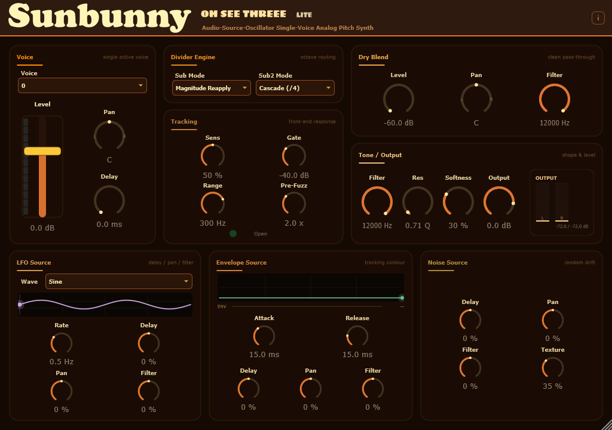

Choose your kind of strange.
Polarity Switch gives the sub a cleaner, more synth-like feel. Magnitude Reapply brings a grittier character. Build the second sub by cascading the divider or re-detecting the first sub voice.

Sunbunny / Analog-style octave playground
Analog-style octave divider turns any input into a layered, glitchy analog choir.
Go deep, get bright, or let the whole stack wobble. Turn one source into five voices with their own place in the mix.

One input. Five octave voices.
Mix two octaves below, two above, and the unison in between. Push the low end into a synth-like growl, bring out upper-octave grit, or leave space for your original sound.
Two octaves down
One octave down
Your source, shaped
One octave up
Two octaves up
Voice layout / each layer has its own level, pan and delay.
Shape the character
Polarity Switch gives the sub a cleaner, more synth-like feel. Magnitude Reapply brings a grittier character. Build the second sub by cascading the divider or re-detecting the first sub voice.
Set the level, stereo pan and delay of every voice. Keep the sub centered, send the upper voices to the sides, or offset a layer to give it its own space.
Separate tone controls shape the sub, unison and upper ranges. Independent prefilters feed the two upper-octave stages; the optional +2 high-pass can clear away lower products.
Envelope, LFO and noise modulation bring movement to delay, pan and filters. Run the LFO freely or sync it to the host tempo. Pitch Cycle sweeps across the voice stack, with optional crossfades.
Two ways in
Oh See Threee
Five voices mixed at once, with individual levels, pans and delays. Blend the registers together or sweep between them with Pitch Cycle.
Oh See Threee Lite
Choose a single octave position, then shape its level, pan, delay and filter alongside Dry Blend. A focused way to explore the same octave character.

Make room for the unexpected
Start with a low-octave layer. Add some brightness. Then loosen the tracking or bring in a little modulation and follow where it goes.
Get Oh See Threee on Gumroad Explore more Sunbunny plugins